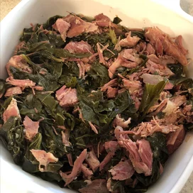

Southern-style Collard Greens

Description
Southern-style greens like my folks make 'em.
Ingredients
- 2 sweet onions, finely chopped
- 2 smoke ham hocks
- 4 cloves garlic, finely chopped
- 3 (32 oz.) containers chicken broth
- 3 (1 lb.) pacakges collard greens, trimmed
- 1/3 cup apple cider vinegar
- 2 tablespoons white sugar
- 1 1/2 teaspoons salt, or to taste
- 3/4 teaspoon ground black pepper, or to taste
Steps
- Combine onions, ham hocks, and garlic in a stockpot;
add chicken broth. Cook mixture over medium heat until
meat is falling off the bone, about 2 hours.
- Stir collard greens, vinegar, sugar, salt, and pepper
into the broth mixture; cook until greens have reached
desired tenderness, about 2 more hours.